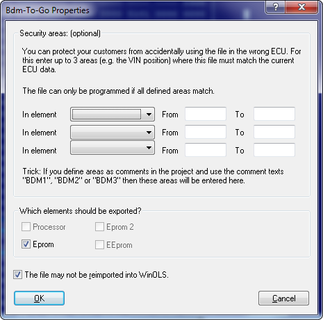

|
The dialog BdmToGo-Properties (Menu project) |

  
|
|
The dialog BdmToGo-Properties (Menu project) |
|

This dialog is shown if you choose BdmToGo as file format when exporting. BdmToGo files are compact and can be programmed into ECUs using BDM100 devices. Depending on the settings they may also be used to send somewhere and re-import them into WinOLS without programming them
You can choose up to 3 areas, which should be compared with the ECU before programming. This was introduced to protect the user from using the wrong ECU and it is also a copy protection for your work. Simply include the VIN into the checked areas and the file can only be programmed into the desired vehicle (and not into all other similar vehicles). It is recommended to mark the areas by comments. If you use the comment names "BDM1", "BDM2" or "BDM3", WinOLS will recognize the comments and automatically enter the marked areas into this dialog.
The address ranges have to be entered as hexadezimal.
Notes about elements: Elements that contain differences between original and version are printed in bold.
Notes about the protection mechanisms: Activate the checkbox "This file may not..." to disallow WinOLS (the WinOLS on other machines AND your WinOLS) to re-import the file, because then the use might edit the areas mentioned above. This option does not modify the programmed data and thus does not offer any protection against re-reading the data from the ECU. To get that kind of protection, activate the option "BDM read protection" in the dialog "Properties: Project". It will place a marker into the data and thus the re-read project can only be imported into a WinOLS that is registered to your customer number.
Shortcuts
| Symbol bar: | - |
| Keyboard: | - |